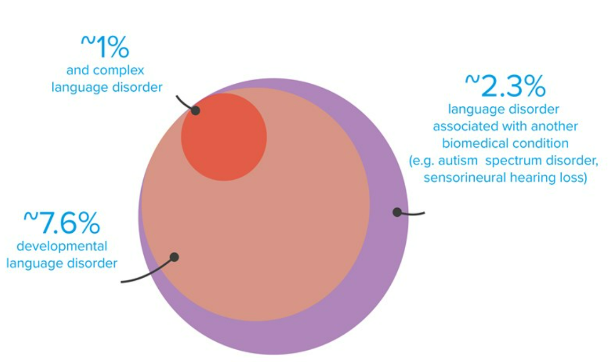

Communication Disorders
Introduction
Communication disorders are a group of communication-related conditions that affect the way people communicate. A person with a communication disorder may have difficulty with verbal or nonverbal communication, such as speaking, reading or writing. The symptoms of a communication disorder may include trouble understanding spoken words, such as those who stutter; trouble expressing oneself clearly; or difficulty maintaining eye contact during conversation.
Communication disorders are conditions that affect language, speech and hearing.
Communication disorders are conditions that affect language, speech, and hearing. There are many types of communication disorders, including:
- Speech delay (delayed growth in the child's ability to speak)
- Stuttering (frequent pausing or repeating words)
- Aphasia (inability to express oneself clearly) *ectropausal articulation disorder (a neurological disorder causing difficulty with certain sounds such as fricatives or sibilants).
Speech disorders affect the sounds a person makes or how clearly he or she speaks.
Speech disorders are the result of a variety of factors, including:
- A physical problem. Some speech disorders are caused by problems with the brain's ability to communicate with other areas of the body (such as joints or muscles).
- Psychological problems. Mental illness can also cause a speech disorder that affects your ability to speak clearly and correctly or understand what others say to you. Speech therapists may be able to help treat these types of disorders if they aren't caused by something else, such as a physical problem affecting your brain's ability to communicate properly with other parts of your body.
Hearing disorders affect what a person hears.
Hearing loss is a common problem. It can be caused by age, noise, ear infections and earwax buildup in the ear canal. Hearing loss can also affect your ability to communicate with others and even cause social isolation.
Hearing aids are surgically implanted behind your ears that help you hear better by amplifying sounds from outside sources like television or music players. They can also block out background noise so that only what you want to listen at any time gets through (like when talking on the phone).

Language disorders affect a child's ability to talk or understand speech.
Language disorders affect a child's ability to talk or understand speech. Language disorders can be caused by a number of factors, including hearing loss, brain injury, and birth defects.
Language disorders are treated with speech therapy or other therapies depending on the severity of the issue. Language disorders are a common problem in children. In fact, about one in every 20 children has some form of language disorder. The most common type is specific language impairment (SLI), which affects about 3% of children under 5 years old. Children with SLI usually have normal intelligence and hearing.
Speech, language and hearing disorders are common in children, with approximately 20 percent of all children having some type of communication disorder by age 6.
Speech, language and hearing disorders are common in children, with approximately 20 percent of all children having some type of communication disorder by age 6. This includes problems with:
- Speech sounds and words
- Muffled speech or reduced volume due to the obstruction of a physical problem (e.g., nasal congestion)
- Auditory processing problems that affect how well you understand what someone says to you
Children who have a communication disorder need help from others to learn how to communicate effectively, as well as strategies to cope with the challenges they face.
Communication disorders are common in children, with approximately 20 percent of all children having some type of communication disorder by age 6. Children who have a communication disorder need help from others to learn how to communicate effectively, as well as strategies to cope with the challenges they face.
Communication disorders affect children in many ways. Some children have trouble using language or speaking clearly. Others have trouble understanding what others are saying, reading, writing or spelling. Children with communication disorders may also have problems expressing themselves through gestures and body language.
Communication disorders in China
Since the Fall, 2014, Dr. Mahshie has been involved in research related to children in China who use cochlear implants. In October 2015, Dr. Mahshie and fellow GWU faculty members Prof. Michael Bamdad and Dr. Shelley Brundage traveled to China to meet with other professionals about current topics such as cochlear implantation and effective clinical training programs. In an effort to better understand speech and hearing professions in China, they presented a paper entitled “Model elements of a clinical and academic program in Speech-Language Pathology” at the Asia Pacific Society of Speech, Language, and Hearing (APSSLH). The APSSLH is dedicated to promoting the exchange of research and ideas regarding all aspects of normal and disordered communication throughout the Asia Pacific Rim. This conference allowed Dr. Mahshie and colleagues to speak with other professionals in the field about the essential components of a strong academic and clinical training program.
Dr. Mahshie and Dr. Gu at the Dedication of the George Washington University and Nanjing Normal University Joint Lab of Speech, Hearing and Rehabilitation Sciences.
Communication Disorders in UK
Around 1.4 million children in the UK have long term speech, language and communication needs (SLCN) that they won’t grow out of. That equates to around 10% of children - two or three in every classroom.
This 10% can be divided into three groups:
Communication Disorders in US
- 5% to 10% of Americans may have communication disorders, costing the U.S. approximately $154–186 billion annually.
- By the first grade, roughly 5% of children have noticeable speech disorders.
- 3 million+ Americans stutter.
- Nearly 7% of Americans have some form of language impairment.
- Approximately 1 million Americans suffer from aphasia.
- Approximately 37.5 million Americans report having some trouble hearing.
- According to an AARP/ASHA 2011 poll of AARP members, 47% of respondents reported having untreated hearing loss.
- 1 in 5 Americans have hearing loss in at least 1 ear.
- Approximately 26 million Americans, ages 20–69, have high frequency hearing loss due to exposure to loud noises.
- The Centers for Disease Control estimate the lifetime costs for all people with hearing loss born in the year 2000 will total $2.1 billion. Most of these costs will come from lost wages due to inability or limited ability to work.
How can you help?
- Reduce distractions.
- Break things down.
- Use non-verbal communication.
- Ask what kind of help they would like.
- Talk around.
- Use sound cues.
- Give them options.
- Encourage them to be aware.
Conclusion
Communication disorders are a serious issue that affects millions of people every year. These disorders can affect the way we communicate with other people, or they can make it hard to communicate at all. The most important thing is that you know what signs indicate someone has a disorder like this so you can be an effective listener and support them in any way possible!